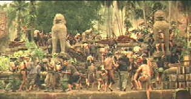

|
Apocalypse Now/A-,A- |
|
Paramount/1979/153m/ANA 2.05 |
Any excuse to revisit Apocalypse Now is rewarding. The outstanding new DVD release show Coppola's distorted vision of war in gorgeous anamorphic images. A complex tapestry of overlapping dissolves opens Apocalypse Now. It lays out the major theme of the film. Jim Morrison's musical lament "All the children are insane," screams out over the images of war and destruction depicting the insanity and horror reflected in the hyperbolic images of director Francis Ford Coppola.
|
 |
|
An unlikely reaction to a siren. ©Columbia |
The absolute
absurdity of Coppola's war is best highlighted in three or four major scenes. A patrol boat taking
Willard into the proverbial "heart of darkness" is journeying deep into the heart of
Vietnam. The music pounds out "I can't get no satisfaction," from the Rolling Stone song.
Willard watches young Mr. Clean (Lawrence Fishburne, only 14 at the time.) dancing to the music and
the vision of absurdity screams out, only to be overpowered moments later by the image of Lance,
the surfer, water-skiing behind the boat, jovially waiving to the natives on the shoreline.
As the boat speeds through the water, Lance in tow, two working Vietnamese in a boat are overturned
by the wake of the American boat, and so it is that Coppola finds a perfect visual metaphor for the
plight of the Vietnamese, fallen in the wake of the insensitive American onslaught. Later, under
the direction of wild Colonel Kilgore, there's a surfing session in between the bomb blasts on the
beach which likewise embellishes the Coppola vision of absurdity at its greatest extremes. But
it is the image at the Cambodian border, a no man's land of hell, that comes closest to defining
the insanity for which the director is searching. Willard moves amongst the troops, looking
for a commander, but none can be found. Only a garish nightmare tableau of war presents itself at
every turn.
Coppola's vision of the Vietnam war is deliberately bombastic. Every
step further into the jungle shakes the ground and the soundtrack. The director's vision
encompasses the idea of the war and the enormity of its overall impact without paying heed to the
details of the individual reality of the war.
Coppola composes the most startling pictures of war in the
first depiction of the 1st of the 9th Air Cavalry Division attacking a beachhead. The visual
imagery, captured in still frame, is a classic depiction of war that easily could be reproduced as
a stamp in memory of the horror of the Vietnam war. Vittorio Storaro brings amazing grace to the
camera work for Apocalypse Now. The cinematographer and director create one master image
after the next in a magnificent visual compilation.
Martin Sheen does an outstanding job as Willard, the strangely cold
and passive detached observer. Sheen controls the rage inside of him and turns it into something
other worldly. Robert Duvall gets to chew the surf with the role of Air Cav commander Colonel
Kilgore. A surfing maniac, Kilgore epitomizes the mad recklessness of the war. He will go to any
length to find the best of Vietnam's surf. When advised that the beachhead where Willard wants to
land has a magnificent six point wave, Kilgore, despite prior reservations about the danger,
determines to land there. When he is reminded of the danger and that this beach is
"Charlie's" point and it pretty hairy, Kilgore belligerently barks, "Charlie don't
surf." Coupled with his later line, "I love the smell of napalm in the morning,"
these comments make an unforgettable pair of bookends to this tale of the madness of war.
Marlon Brando's enigmatic Colonel Kurtz is an outstanding
characterization, but he doesn't get that much screen time. Frederic Forest makes a frightening
Chef and Dennis Hopper gets some big screen time in a small role as the news photographer.
Apocalypse Now is a splendid DVD, preserving for home video the
enormously powerful images of Coppola and director of photography Vittorio Storaro. Color fidelity
is remarkably accurate, bringing to life the lush jungle, the blue skies and the fierce explosions.
The images is very sharp. Slight edge enhancement is evident in high contrast images, but it is not
excessive and fortunately does not create any evident noise. Grain looks spectacular on Apocalypse
Now. It's finely rendered and movement is smooth and consistent. The sound, now Dolby
Digital 5:1, is as powerful as ever. The directionality is outstanding. Helicopter pans move around
the home theater with startling reality. Explosions erupt with controlled bass. A nice balance
between music, effects and dialogue, makes it easier than ever to understand the dialogue.
Though you can't call this Apocalypse Now DVD a special edition,
there is a small extra delight in the form of Coppola's commentary over the controversial end
credit sequence. There is no question that the sequence depicting the destruction of the
Kurtz compound changes the tone of the movie's end. The fade to black which ends this definitive
version is much more powerful and the message more clear.
Selections from the feature archive include articles on Akira Kurosawa, Frank Darabont, Blonde Bimbos, Hollywood Street Gangs, or Vietnam: The Hollywood Pariah, and many more...

Is North by Northwest Hollywood's definitive exploration of the nose? From schnozzles to beezeers, film mavens make the most of the foremost. Click on Mount Hitchcock for more.

Movie Rage: Death in the Aisles
Everyone knows what it feels like to get angry at the
movies these days. Here's a humorous but not so delightful view of big screen misery.
Redeeming
the Writer:
A Conversation with Frank Darabont


DVDPlanet is the DVD
incarnation of legendary laser retailer Ken Crane's. Deep discounts and serious service.

Great site for DVD followers. Lots of
information, some speculation, opinion, and reviews all bundled in a sparkling interface.

Original articles, DVD reviews, links, forum discussion and more.

The DVD Forum is an international association of hardware
manufacturers, software firms and other users of Digital Versatile Discs (the "DVD
Format"), created for the purpose of exchanging and disseminating ideas and information about
the DVD Format and its technical capabilities, improvements and innovations.
 Direct from the corridors of the Home Theater Forum, Home Theater Talk is the
newest place on the Net to discuss everything home theater. Friendly atmosphere and knowledgeable
folks are the secret ingredients.
Direct from the corridors of the Home Theater Forum, Home Theater Talk is the
newest place on the Net to discuss everything home theater. Friendly atmosphere and knowledgeable
folks are the secret ingredients.

The Movie Poster Archive include extensive poster images from the films of stars like Susan Hayward, Kirk Douglas, Katharine Hepburn and many more. Our featured star is Robert Mitchum